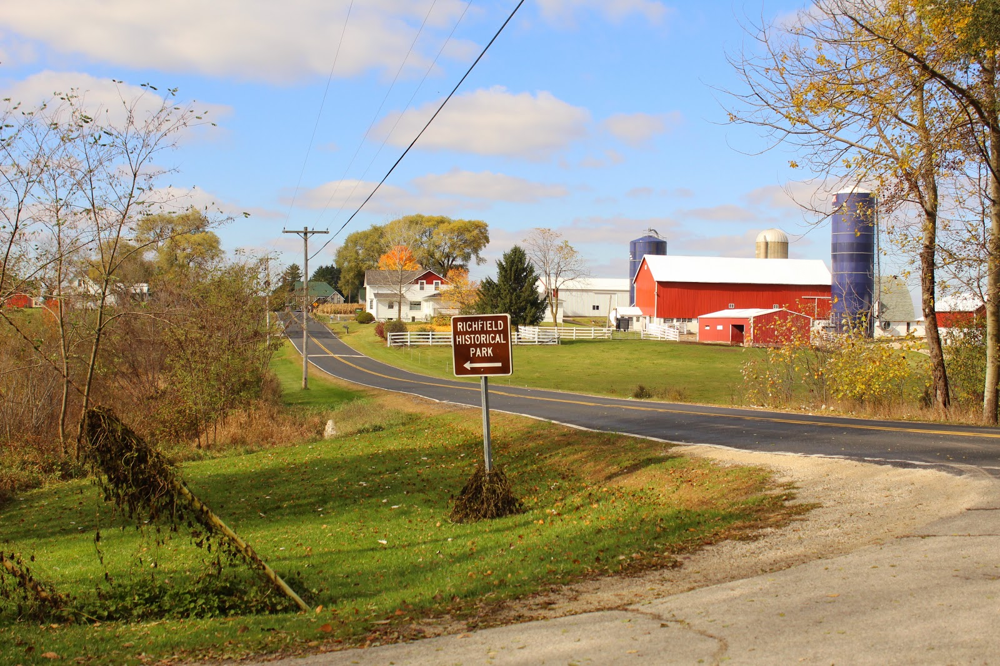
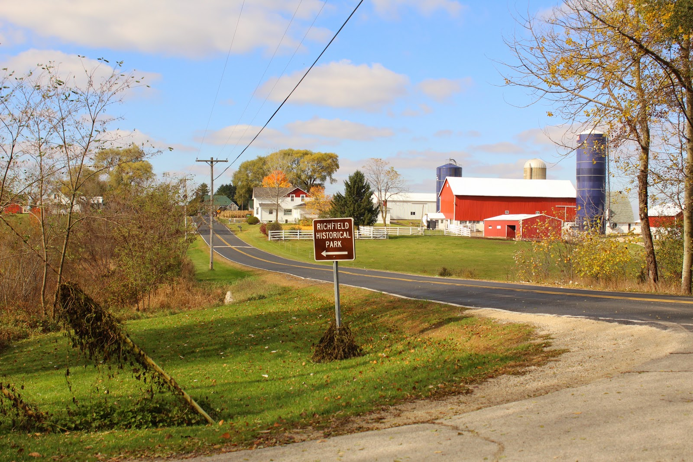

Welcome To The Village of Richfield
Richfield is a village in Washington County, Wisconsin, United States. It is a suburb of Milwaukee with a population of 11,623. The previously unincorporated communities of Hubertus, Richfield, and Colgate are located in the village. Richfield is full of attractions, nature trails, family friendly activities, unique cultural events, world class golf courses, and great places to eat & shop! The village has 6 lakes and the largest one is Friess Lake. Other lakes include Amy Belle, Bark Lake, Lake Five and Mud Lake. Camp Minikani is located on the shore of Lake Amy Belle in the Hubertus area of the village. Richfield is known for its country style of life, with subdivisions scattered among the rolling farm fields. There are two shopping areas in the village. They provide groceries, banking, food & entertainment and other consumer businesses. Richfield has numerous parks which provide walking trails, soccer fields, baseball diamonds and playground equipment for recreation.
 

Contact Information